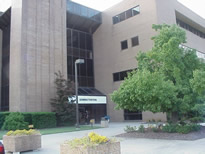

|
 [reprinted
from an online obituary] Dr. Lewis Carnegie Dowdy, sixth
president and first chancellor of North Carolina Agricultural
and Technical State University, died Dec. 17, 2000, in Greensboro.
He was 83.Dowdy was appointed acting president of A&T, then
known asA&T College, in January 1962,and he was selected
president inApril 1964. He was appointed chancellor of North
Carolina Agricultural and Technical StateUniversity in July 1972. [reprinted
from an online obituary] Dr. Lewis Carnegie Dowdy, sixth
president and first chancellor of North Carolina Agricultural
and Technical State University, died Dec. 17, 2000, in Greensboro.
He was 83.Dowdy was appointed acting president of A&T, then
known asA&T College, in January 1962,and he was selected
president inApril 1964. He was appointed chancellor of North
Carolina Agricultural and Technical StateUniversity in July 1972.
He retired June 30, 1981. During his 17-year tenure at A&T,
Dowdy gained national respect as a prominent highereducation
administrator. Under his leadership, A&T received national
accreditation for its schools of nursing, engineering, and business
and economics, andfor its programs in teacher education, industrial
technology, chemistry, and social work.The Dowdy administration
also brought significant growth in research and grants as A&T
attracted $19.9 million in federal support for research by faculty
and students that related to issues faced by the state, nation
and world. Asa result, the university became thethird ranked
educational research center in the state. 
Under Dowdy’s urging, A&T embraced the concept of
adevelopment and university relations office. This change enabled
the university to gainmuch needed external supportthat totaled
more than $8 million from corporations, foundations and the university’s
nationalalumni association.The Dowdy Era also brought many capital
improvements oncampus including a new studentdining center, a
student union, five major classroom buildings, a health/physical
education/recreation center and a football stadium complex.
Because of his distinguished leadership in American higher
education, Dowdy was elected president of the National Association
of State Universities and Land-grant Colleges in 1972. He conferred
with three U.S.presidents on matters affecting higher education,
and he testified before numerous congressional committees. Dowdy
also served onstate, regional and national boards and commissions.
A native of Eastover, S.C., Dowdy was born Sept. 1, 1917,
to William Wallace and Alice Shiver Dowdy. He was
educated in the public schools of Eastover then received his
bachelor’s, master’s, doctorate degrees and certificate
from Allen University in Columbia, S.C. (1939), Indiana State
College (1949) and Indiana University (1965) and Harvard University
Management Institute for Presidents (1965), respectively.He was
awarded honorary degrees from Allen University, Indiana State
University, University of Maine-Orono, Indiana University and
Duke University, and special commendations from Indiana State
University, The Danforth Foundation and the Greensboro Chamber
of Commerce. For many years, Dowdy was a deacon at Providence
Baptist Church in Greensboro. He was amember of Alpha Phi Alpha
Fraternity, Beta Epsilon Boule of the Sigma Pi Phi Fraternity,
Greensboro Men’s Club and Neighbors United.
Dowdy is survived by his wife of 57 years, Elizabeth Smith
Dowdy; a brother, Sam Bernard Dowdy of Atlanta; sisters, Fannie
Dowdy Jackson and Annie Lee Dowdy Wilson of Hopkins, S.C.; threechildren,
Lewis Carnegie Dowdy,Jr. (Patricia) of Charlotte, Lemuel Wallace
Dowdy of Greenbelt, Md., and Elizabeth Dowdy King of Greensboro;
five grandchildren; a great granddaughter; and a host of relatives
and friends
This Lineage Last Updated
September 2023
Lemuel Dowdey born about
1795 in North Carolina. He appeared in Orangeburg Co SC in the
1850 census with his wife Emma and youngest son Joshua who remained
in his household. The census enumerated his year of birth as
1801, age 49. Lemuel Dowdy died on 29 July 1856 (tombstone),
his grave marker states: "Where death, where darkness reigns,
Jehovah is my stay, His road my trembling feet sustains, His
staff defends my way." Lemuel Dowdey, along with son William
Henry Dowdey, are buried in the Dowdey Cemetery near McLeod United
Methodist Church. The cemetery is actually in the median of U.
S. Highway 378, just one mile west of U. S. Highway 601. Several
of Lemuel's grandchildren are also buried there.
married Emma Sawyer on 26 January 1825 at Wake Co NC,
She was born about 1793 and died 1856.
IGI: Lemuel Dowdy married Emiline Sawyer 26 January 1825,
Wake, North Carolina
children: It is unknown
just how many children there were, but they had at least two
sons:
1(i). William Henry Dowdey born 3 November 1830; He
died 19 August 1909 buried in the Dowdey Cemetery near McLeod
United Methodist Church.
He was a graduate of medical school, but after the Civil
War his primary profession was farming. He did continue, as a
"country doctor" to treat residents of lower Richland
County. He would also pull teeth if anyone needed it. He passed
his knowledge on to daughter, Octavia Dowdey, who also treated
those who could not afford medical attention.
Both William Henry Dowdey and Susan Alberta Morgan are
buried in the Dowdey Cemetery in Eastover, SC. Also buried there
are: daughters Lillie Carolyn Dowdey Garner Young, Annie Lemuel
Dowdey Garner and sons Lemuel Charles Dowdey, Cleveland Walker
Dowdey and William Henry Dowdey, Jr. Photos of their markers/tombstones
are shown there also. Daughter Octavia Dowdey Garner is buried
in the McLeod United Methodist Church Cemetery just across the
street from the Dowdey Cemetery.
married 1) Rosa Belle Jackson sometime about 1858;
She was born about 1824 and died sometime prior to December 1870
married 2) Susan Alberta Morgan on 1 December 1870.
She was born 24 December 1849 and died 22 June 1932
children
2(i). Octavia E. Dowdey born about 1859 daughter of
William Henry Dowdy and 1st wife Rosa Jackson; She died 1935
2(ii). William Gilbert Dowdey born 20 September 1871
to William Henry Dowdy and 2nd wife Susan Morgan; He died 10
December 1952
2(iii). Lillie Carolyn Dowdey born 27 September 1873;
She died 1 December 1952
2(iv). Eunice "Eva" Evangeline Dowdey born
8 January 1877; She died 30 June 1926
2(v). Annie Lemuel Dowdey born 4 October 1879; She
died 17 November 1970
2(vi). Lemuel Charles Dowdey born 8 May 1882; He died
29 December 1922
2(vii). Cleveland Walker Dowdey born 4 November 1885;
He died 24 June 1940
2(viii). Joshua Heyward (or Haywood) Dowdey born 6
June 1887; He died 14 May 1957
2(ix). William Henry Dowdey, Jr. born 8 June 1891;
He died 8 December 1909
2(x). Tillinghast Morgan Dowdey born 8 August 1894;
He died 20 April 1969
1(ii). Joshua H. Dowdy born about 1833, age 17 in the
1850 Orangeburg SC census. In 1860 census, he was enumerated
as age 25 born SC, working as an overseer in Orangeburg Co SC.
He died in 1872.
married Margaret ______. She was identified in census
records as African American. She married Sam Clark, also African
American, after death of husband Joshua Dowdy
children:
2(i). William Wallace Dowdy born about 1864, age 6
in 1870 census; lived Eastover, Richland Co. SC; Likely the William
Dowdy age 15 "mulatto" who appears in the 1880 census
HH of Sam Clark age 60, black, wife Margaret age 40, black, in
Lower Richland Co SC. Listed as "son" in the HH. However,
in the prior 1870 census for Columbia, Richland Co SC, this William
Dowdy is enumerated in the HH of John
H. Dowdy (sic), all enumerated as black. William's mother Margaret
remarried Sam Clark after the death of his father Joshua H Dowdy
in the early 1870s. He was married to 2nd wife Alice in 1900
Richland Co SC census, age 35; William Wallace Dowdy died in
1950
1870 Richland Co SC Census
John H. Dowdy 37, white b SC (he is Joshua,
not John)
Margaret Dowdy 23, black b SC
William Dowdy 6, black b SC (b abt 1864)
Ema Dowdy 4, black b SC
Elizabeth Dowdy 2, black b SC
Margaret Clark 60 black b VA
Rachel Dowdy 9 black b SC
Peter Davis 35 black b SC
Eliza Davis 24 black b SC
Alexander Davis 4 black b SC
Peter Davis 1 black b SC
Thomas Williams 8 black b SC
married 1) Rebecca Wright
married 2) Alice Shiver about 1900 in SC; She was born
about 1874; She died in 1942
married 3) Rosa Scott She was born about 1918; She
died in 1998
children
3(i). Lemuel Dowdy born about 1883 in SC, age 17 in
father's 1900 census household
3(ii). Amy Dowdy born about 1887 in SC, age 13 in father's
1900 census household
3(iii). Emma Dowdy born about 1889 in SC, age 11 in
father's 1900 census household
3(iv). William W Dowdy Jr born about 1891 in SC, age
9 in father's 1900 census household
3(v). Maggie Dowdy born about 1893 in SC, age 7 in
father's 1900 census household
3(vi). Betty Dowdy born about 1885 in SC, age 5 in
father's 1900 census household
3(vii). Henry Dowdy born about 1887 in SC, age 3 in
father's 1900 census household
3(viii). Harry L. Dowdy born about 1900, age 20 in
1920 census, son of William W Dowdy and 2nd wife Alice Shiver
3(ix). Earnest Dowdy born about 1902, age 18 in 1920
census, son of William W Dowdy and 2nd wife Alice Shiver
3(x). Catherine Dowdy born about 1904, age 16 in 1920
census, daughter of William W Dowdy and 2nd wife Alice Shiver
3(xi). Fred Dowdy born about 1906, age 14 in 1920 census,
son of William W Dowdy and 2nd wife Alice Shiver
3(xii). Alice Dowdy born about 1908, age 12 in 1920
census, daughter of William W Dowdy and 2nd wife Alice Shiver
3(xiii). Annie M. Dowdy born about 1910, age 10 in
1920 census, daughter of William W Dowdy and 2nd wife Alice Shiver
3(xiv). Dr. George T. Dowdy born about 1912, age 8
in 1920 census, son of William W Dowdy and 2nd wife Alice Shiver;
He became a professor of Agriculture Economics at Tuskeegee Institute.
Dr. George Theodore Dowdy, Sr. - Professor Emeritus, Tuskegee
University: one of 14 children of (mulatto) South Carolina plantation
owner William Wallace Dowdy and Alice Shiver Dowdy. George T.
Dowdy was born on March 11, 1913 in Eastover, South Carolina.
He received his elementary and secondary school education in
South Carolina. He earned a B.S. degree at South Carolina State
College in 1937. He completed his M.S. (1947) and Ph.D. (1952)
degrees in agricultural economics at Ohio State University and
did post-doctorate work at Case Institute of Technology. After
receiving his Ph.D. from Ohio State University, Dr. Dowdy came
to Tuskegee Institute, in Alabama, to head its Division of Agricultural
Economics. While heading the Division of Agricultural Economics
at Tuskegee Institute, Dr. Dowdy did consulting work and was
instrumental in securing financial aid for farmers in Macon County,
Alabama. In the mid-1970's, he became Chairman of the Division
of Social Sciences at Tuskegee Institute and was vitally instrumental
in securing grants in excess of $1.6 million for Tuskegee Institute's
adult educational program affecting about 10,000 functional illiterates
in Macon County, Alabama. Dr. Dowdy was a very active member
of the Tuskegee, Alabama community and served as a Director of
the Tuskegee Federal Savings & Loan Association and simultaneously
served as Chairman of both the Building Committee and Appraisal
Committee of The Tuskegee Federal Savings & Loan Assn. In
1979, Dr. Dowdy was appointed by the Governor of Alabama to serve
on the Macon County Board of Equalization and in 1988 he was
re-appointed by the Governor to continue to serve on that Board.
Dr. Dowdy was also the author of Agricultural Economics and
Related Terms (1966) and authored several published articles
in professional and trade journals. When Dr. Dowdy retired in
1980, Tuskegee Institute President Luther H. Foster, bestowed
upon him the honor of Professor Emeritus. Dr. Dowdy was a World
War II veteran and an active member of Alpha Phi Alpha Fraternity
in Tuskegee and The Greenwood Missionary Baptist Church. Dr.
Dowdy died (at age 87) at his Bibb Street home in Tuskegee Institute
on August 30, 2000. He was preceded in death by his wife of 55
years, Ruth Ball Dowdy, who died in 1997. They are survived by
their two children, Brenda Dowdy-Robinson and George T., Jr.
of Tuskegee Institute, Alabama.
See
photo and newspaper biography here
3(xv). Jack Dowdy born about 1914, age 6 in 1920 census,
son of William W Dowdy and 2nd wife Alice Shiver
3(xvi). Lewis Carnegie Dowdy born 1 September 1917
Eastover SC; He became Chancellor of NC A&T University [see
photo and info above]
Dr. Lewis C. Dowdy, Sr. (sixth President and first Chancellor
of North Carolina Agricultural and Technical State University).
Lewis C. Dowdy, Sr. was born September 1, 1917 in Eastover, South
Carolina; he was the brother of Dr. George T. Dowdy of Tuskegee
Institute, and also one of the 14 children of William Wallace
Dowdy and Alice Shiver Dowdy of South Carolina. Dr. Lewis C.
Dowdy, Sr. was educated in the public schools of Eastover, S.C.
and then received his Bachelors, Master's, Doctorate degrees
and certificate from Allen University in Columbia, South Carolina
(1939), Indiana State College (1949) and Indiana University (1965)
and Harvard University Management Institute for Presidents (1965)
respectively. Because of his distinguished leadership in Amercan
higher education, he was elected President of the National Association
of State Universities and Land-grant Colleges in 1972. He conferred
with three U.S. Presidents on matters affecting higher education
and he testified before numerous congressional committees. [see
The Aggie Report, a BiWeekly Newsletter of N.C. A&T State
Univ., Jan. 19, 2001). Dr. Dowdy was a member of Alpha Phi Alpha
Fraternity, Beta Epsilon Boule of the Sigma Pi Phi Fraternity,
and was a deacon at Providence Baptist Church in Greensboro.
Dr. Lewis C. Dowdy, Sr. died December 17, 2000 in Greensboro,
North Carolina. He was 83 years of age at his death. He is survived
by his wife Elizabeth Smith Dowdy of Greensboro, N.C., his sons,
Dr. Lewis C. Dowdy, Jr. of Charlotte, N.C., Attorney Lemuel W.
Dowdy, Sr. of Washington, D.C., his daughter Elizabeth Dowdy
King of Greensboro, N.C.
married Elizabeth Smith
children:
4(i). Lewis Carnegie Dowdy Jr. - of Charlotte NC
4(ii). Lemuel Wallace Dowdy - of Greenbelt MD
4(iii). Elizabeth Dowdy - of Greensboro NC , married
____King.
3(xvii). Sam Bernard Dowdy - lived Atlanta
3(xviii). Fannie Dowdy - married ___Jackson
3(xix). Annie Lee Dowdy - married ____Hopkins (this may be a duplicate)
2(ii). Ema Dowdy born about 1866 SC, age 4 in 1870
census household
2(iii). Elizabeth Dowdy born about 1868 SC, age 2 in
1870 census household
|

 Dr. Lewis
Carnegie Dowdy
Dr. Lewis
Carnegie Dowdy